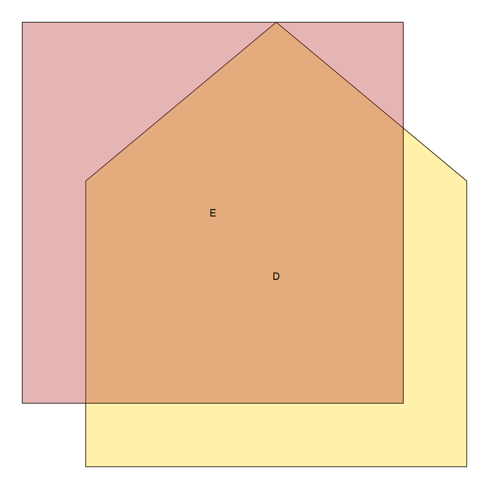
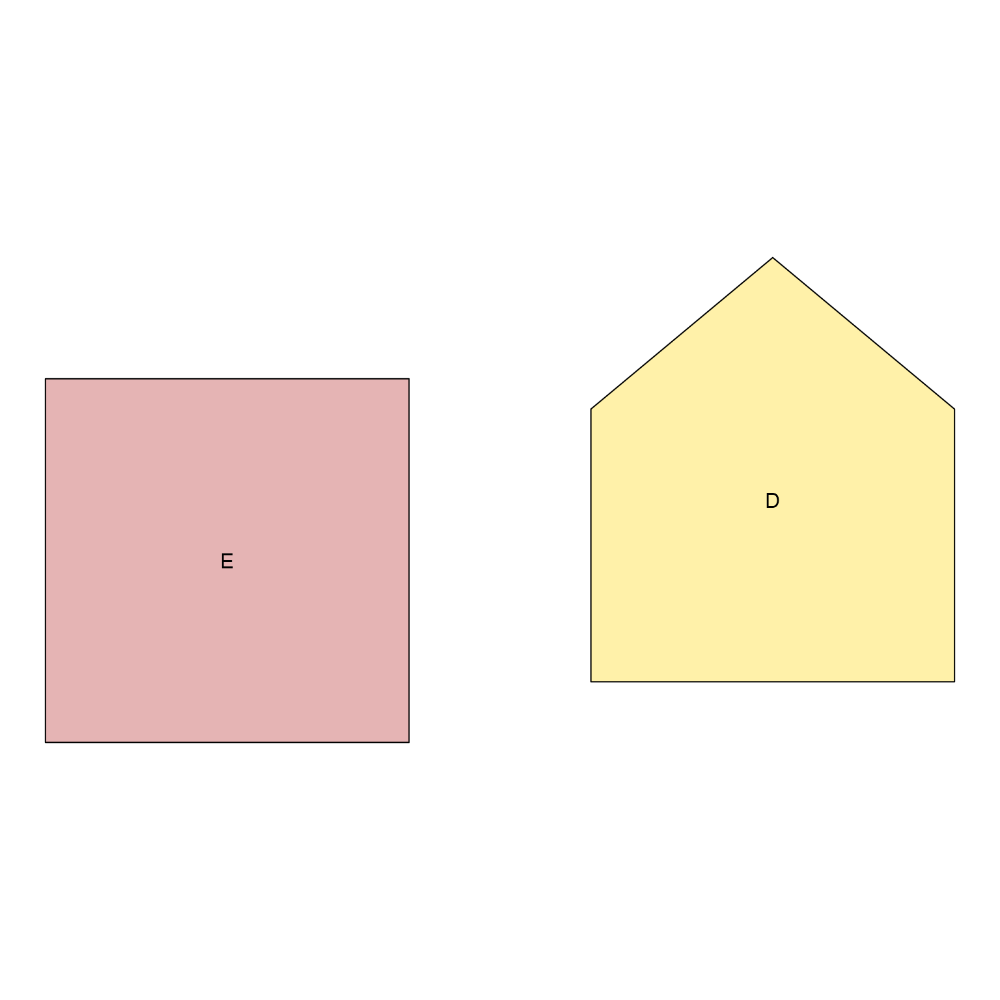
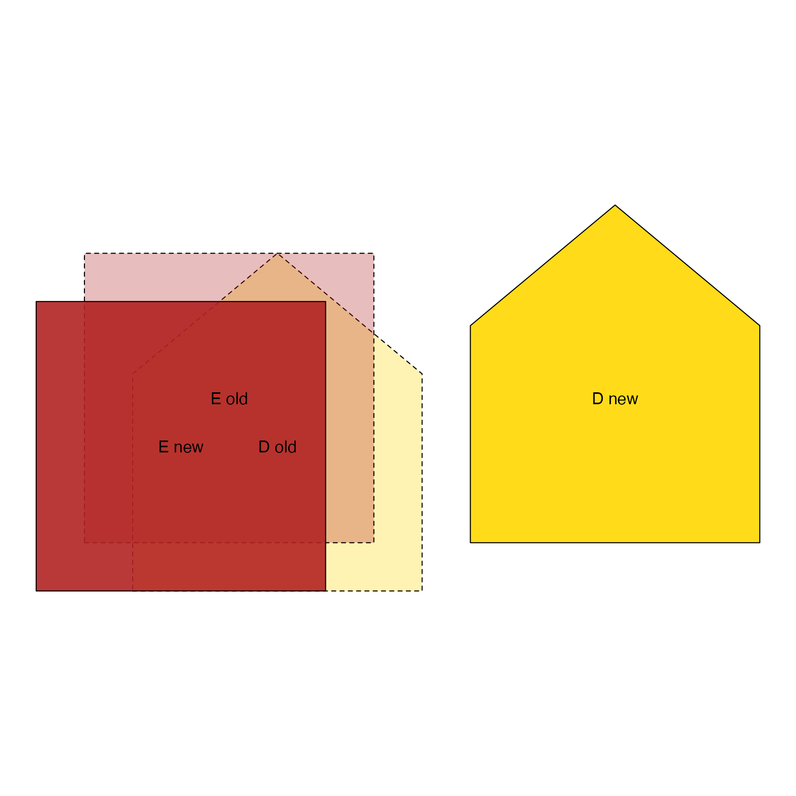

Nudge JamPolygon coordinates
nudge_JamPolygon(
jp,
nudge = NULL,
rotate_degrees = 0,
center = NULL,
scale = c(1, 1),
verbose = FALSE,
...
)Arguments
- jp
JamPolygonobject- nudge
listwhose names matchnames(jp), containingnumericvector with coordinates x and y. Alternatively, an atomicnumericvector with length=2, which will be applied to the x,y coordinates for all polygons injp. An example of list input:nudge=list(polyname1=c(1, 0))- rotate_degrees
numericoptional rotation in degrees, named usingnames(jp). When a single unnamed value is provided, it is applied to all polygons injp. When anumericvector is provided withlength(jp), it is applied in order to each polygon injp. Note: 90 degrees will rotate clockwise (top the right, bottom to the left) by 1/4 turn.- center
numericcoordinates with optional center position. DefaultNULLwill use the center of the bounding box ofjp. All parts of the polygon, and all polygons, use the samecenter.- scale
numericoptional scalar to enlarge or shrink the polygon, named usingnames(jp). Alternatively, if a single unnamed value is provided, it is applied to all polygons injp. If anumericvector is provided withlength(jp), it is applied in order to each polygon injp. The scale is applied relative to thecenteras provided or calculated.- ...
additional arguments are ignored
Details
Polygon coordinates within a JamPolygon object are nudged by name
or polygon number, such that all parts of each polygon are adjusted
together. For multi-part polygons, and/or polygons with internal holes,
all parts are moved the identical amount.
See also
Other JamPolygon:
JamPolygon-class,
Venndir-class,
[,JamPolygon,ANY,ANY,ANY-method,
add_orientation_JamPolygon(),
area_JamPolygon(),
bbox_JamPolygon(),
buffer_JamPolygon(),
check_JamPolygon(),
check_Venndir(),
eulerr_to_JamPolygon(),
farthest_point_JamPolygon(),
find_venn_overlaps_JamPolygon(),
has_point_in_JamPolygon(),
intersect_JamPolygon(),
label_fill_JamPolygon(),
label_outside_JamPolygon(),
label_segment_JamPolygon(),
labelr_JamPolygon(),
minus_JamPolygon(),
nearest_point_JamPolygon(),
plot.JamPolygon(),
point_in_JamPolygon(),
polyclip_to_JamPolygon(),
polygon_circles(),
polygon_ellipses(),
sample_JamPolygon(),
split_JamPolygon(),
union_JamPolygon(),
update_JamPolygon()
Examples
DEdf <- data.frame(check.names=FALSE,
name=c("D", "E"),
x=I(list(
c(-3, 3, 3, 0, -3),
c(-4, 2, 2, -4))),
y=I(list(
c(-3, -3, 1.5, 4, 1.5),
c(-2, -2, 4, 4))),
fill=c("#FFD70055", "#B2222255"))
DEjp <- new("JamPolygon", polygons=DEdf)
plot(DEjp)

nudge <- list(D=c(7, 1), E=c(-1, -1));
DEjp_nudged <- nudge_JamPolygon(DEjp, nudge=nudge)
plot(DEjp_nudged)

# plot the difference
plot_jpdiff <- function(a, b) {
fillb <- jamba::alpha2col(alpha=0.9, b@polygons$fill);
filla <- jamba::alpha2col(alpha=0.3, fillb)
plot(rbind2(a, b),
fill=c(filla, fillb),
label=c(paste(a@polygons$name, "old"),
paste(b@polygons$name, "new")),
border.lty=rep(c(2, 1), c(length(a), length(b))))
}
plot_jpdiff(DEjp, DEjp_nudged)

# rotate, nudge, and scale
DEjp_rotated <- nudge_JamPolygon(DEjp,
rotate_degrees=c(E=45),
scale=c(E=0.7),
nudge=list(E=c(5, 0), D=c(-1, -4)))
plot_jpdiff(DEjp, DEjp_rotated)